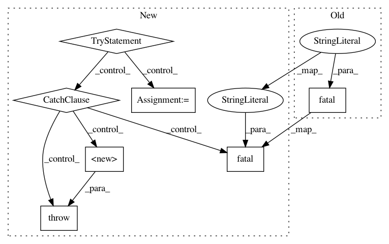

9db50ab9ed6bf6b4e462c84e2c38fedd36e7467a,niftynet/io/image_sets_partitioner.py,ImageSetsPartitioner,randomly_split_dataset,#ImageSetsPartitioner#Any#,163
Before Change
header=None,
names=[COLUMN_UNIQ_ID, COLUMN_PHASE])
return
tf.logging.fatal("Unable to load partition file from %s",
self.dataset_split_file)
raise ValueError
def __str__(self):
return self.to_string()
After Change
This function sets self._partition_ids
if overwrite:
try:
valid_fraction, infer_fraction = self.ratios
valid_fraction = max(min(1.0, float(valid_fraction)), 0.0)
infer_fraction = max(min(1.0, float(infer_fraction)), 0.0)
except (TypeError, ValueError):
tf.logging.fatal(
"Unknown format of faction values %s", self.ratios)
raise
n_total = self.number_of_subjects()
n_valid = int(math.ceil(n_total * valid_fraction))
n_infer = int(math.ceil(n_total * infer_fraction))
n_train = int(n_total - n_infer - n_valid)
In pattern: SUPERPATTERN
Frequency: 3
Non-data size: 7
Instances
Project Name: NifTK/NiftyNet
Commit Name: 9db50ab9ed6bf6b4e462c84e2c38fedd36e7467a
Time: 2017-11-08
Author: wenqi.li@ucl.ac.uk
File Name: niftynet/io/image_sets_partitioner.py
Class Name: ImageSetsPartitioner
Method Name: randomly_split_dataset
Project Name: NifTK/NiftyNet
Commit Name: baecce5a6fbe4576ca8348a93dc56f07e7ba84f6
Time: 2019-06-05
Author: ucabtmv@ucl.ac.uk
File Name: niftynet/contrib/csv_reader/csv_reader.py
Class Name: CSVReader
Method Name: initialise
Project Name: NifTK/NiftyNet
Commit Name: 165207a79dafcf658f483d26ccffd9e982389dcc
Time: 2018-05-01
Author: wenqi.li@ucl.ac.uk
File Name: niftynet/io/image_reader.py
Class Name: ImageReader
Method Name: initialise